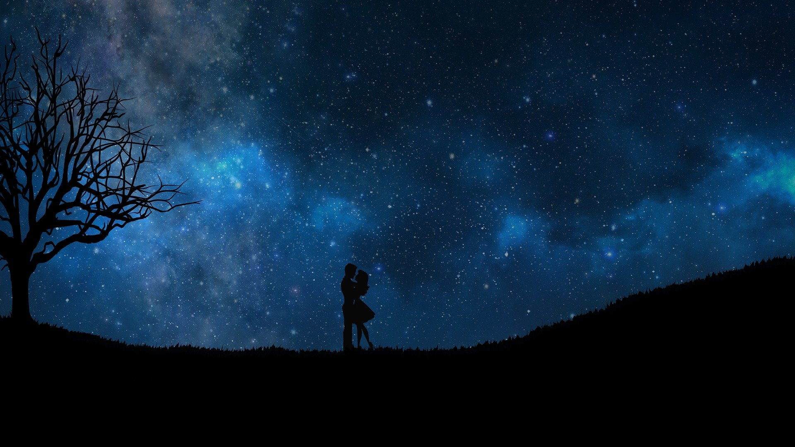

Narrativa e Generi
Narrativa Fantasy e Sottogeneri
2 agosto 2021

🐉 Cos'è la narrativa fantasy, e perché è così difficile definirla con precisione?
La prima cosa che molti tendono a immaginare quando si parla di fantasy è l'universo di Tolkien. Mi preme calcare il fatto che il genere è infinitamente più vasto di “elfi, nani e orchi”.
No, sul serio. Se Tolkien è l'unica forma di fantasy che ti viene in mente, probabilmente hai letto prevalentemente questo tipo di narrativa.
Spesso chi dice di odiare il fantasy ne ha senza dubbio già letti (e amati) senza nemmeno rendersene conto.
🌍 E questo è perché ci sono innumerevoli sfumature del mondo della fantasia.
Come ho scritto nel precedente articolo sulla narrativa di genere, tutti i romanzi incorporano diversi componenti di altrettanti generi letterari, e spesso la sola presenza di elementi speculativi o di fantasia non è sufficiente a descrivere ciò che stiamo leggendo.
Per questa ragione, il fantasy è in continua evoluzione e, per meglio inquadrarlo, sono state create ulteriori etichette che chiameremo sottogeneri.
Prima di addentrarci nelle sue sfumature, possiamo dividere il fantasy in due grandi categorie, che racchiudono un insieme di ambientazioni e tematiche:
High Fantasy vs Low Fantasy
Le ambientazioni High Fantasy presentano mondi immaginari caratterizzati dalle proprie regole magiche, fisiche e naturali. Gli archetipi High Fantasy sono quelli che abbiamo imparato ad associare al Signore degli Anelli: la lotta del bene contro il male, la missione cruciale da cui dipende l'intera sopravvivenza dell'universo, la figura del prescelto o l'eroe.
Nelle ambientazioni Low Fantasy, la storia si svolge spesso nel mondo reale, turbato da elementi di natura magica o sovrannaturale. I personaggi tendono a essere persone ordinarie.
 Urban Fantasy
Urban Fantasy
Uno dei sottogeneri Low Fantasy dall'identificazione più immediata. Ambientato in luoghi realmente esistenti, combina elementi fantastici alla vita di tutti i giorni.
Anche le opere con supereroi possono essere considerate urban fantasy.
Per esempio: The Reckoners di Brandon Sanderson.
Fantasy Storico
Come dice il nome, è una versione più “antica” dell’urban fantasy. Ambientato in epoche passate, si impegna a dare importanza all’accuratezza storica, agli abiti e alle tradizioni del periodo. Pur essendo profondamente speculativo nella sua natura fantastica, cerca di affiancarsi a eventi realmente accaduti o catapulta personaggi inventati in un’ambientazione già definita dalla storia.
Per esempio: A colpi di Cannonau (di questa scema che scrive articoli).
Dark Fantasy
Combina elementi di fantasy e horror, sbilanciandosi verso quest’ultimo. L’ambientazione è cupa, buia. Il tono è mirato a creare e mantenere ansia e tensione nel lettore.
Romantasy
Forse il sottogenere che più di tutti ha conquistato BookTok e i social degli ultimi anni. Il romantasy fonde elementi di fantasy – magia, creature soprannaturali, mondi immaginari – con una storia d’amore al centro della trama.
Più conosciuto nella sua accezione di paranormal romance, qui troviamo vampiri, lupi mannari e individui tenebrosi. Ma la vera esplosione del genere è arrivata con i fae: creature fatate oscure, corti pericolose, contratti magici e tensione alle stelle. Il tropo “mortale intrappolata nella corte dei fae” – reso celebre da A Court of Thorns and Roses di Sarah J. Maas – è diventato una delle formule più virali della narrativa moderna.
E proprio qui entra in gioco il concetto di spice: il livello di esplicitezza delle scene romantiche, oggi un vero parametro di valutazione tra le lettrici. Il fenomeno è diventato virale su TikTok, con migliaia di recensioni che classificano i libri per numero di 🌶️, trascinando il romantasy fuori dalla nicchia per farne uno dei generi più venduti al mondo.
Per esempio: Echi di sabbia e chele spezzate (di questa scema che scrive articoli). 🦀
Steampunk
Un ibrido tra fantasy e fantascienza, la tecnologia è “meno avanzata” e spesso associata a elementi fantastici. L’epoca prediletta è quella vittoriana e non si può parlare di steampunk senza pensare a ingranaggi, meccanismi e cappelli a cilindro. ⚙️
Favole e Fiabe
Anche le favole che ci raccontavano da piccoli fanno parte del genere, così come l’epica antica. Addirittura si dice che l'Odissea sia il primo fantasy mai scritto.
Post-Apocalittico
La fine del mondo è arrivata e solo pochi esseri umani (o no?) sono sopravvissuti. Un futuro in cui ogni cosa è stata distrutta dalla guerra, dalle radiazioni, da un virus o da un cataclisma.
A seconda del livello di tecnologia e di aderenza alla scienza o pseudoscienza, il sottogenere può rientrare anche nella fantascienza.
Epic Fantasy
Caratterizzato da un worldbuilding esteso, l’universo e le sue caratteristiche fantastiche influenzano su larga scala i protagonisti. L’epic fantasy è noto per dare origine a tomi massicci dovuti all’ambientazione dettagliata e a molteplici sottotrame. Nell'epic fantasy più classico possiamo trovare grandi battaglie campali e un’ambientazione medievale/europea, dove la caratteristica determinante è l’eterna lotta tra il bene e il male.
Per fortuna sempre più autori moderni si stanno distaccando dagli stereotipi per creare mondi unici, con sistemi di magia, worldbuilding e personaggi che si allontanano dai tropi ricorrenti.
Opere maestre di epic fantasy (e profondamente diverse tra loro) sono Il Signore degli Anelli di J.R.R. Tolkien e Le Cronache della Folgoluce di Brandon Sanderson.
➡️ Questa breve lista lascia subito intendere quanto i sottogeneri del fantasy possano essere infiniti una volta combinati tra di loro. Avere un "etichetta" per la propria opera è importante ai fini di marketing o per la posizione negli scaffali, ma non è sempre così facile trovare una giusta identificazione.
Come per il mio romanzo young adult Echi di sabbia e chele spezzate. ?
Riesci a indovinare il suo genere principale?